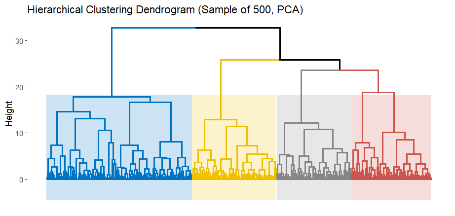
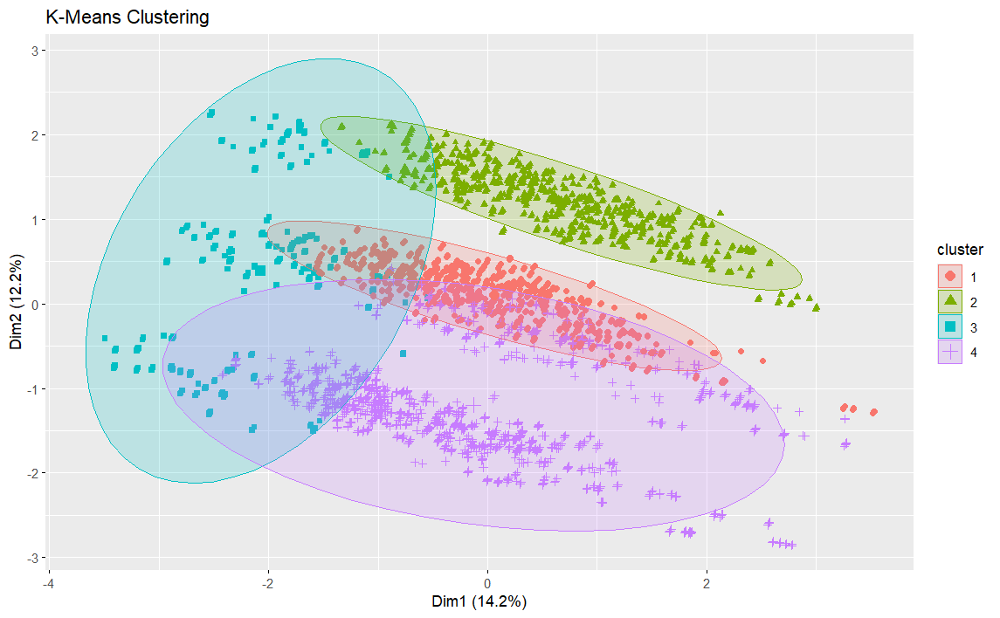
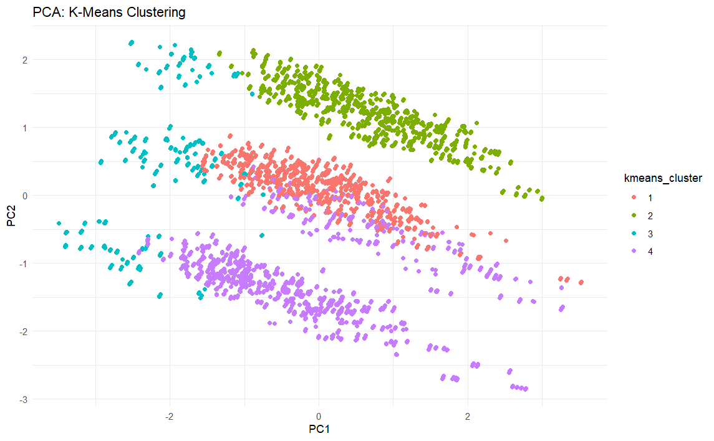
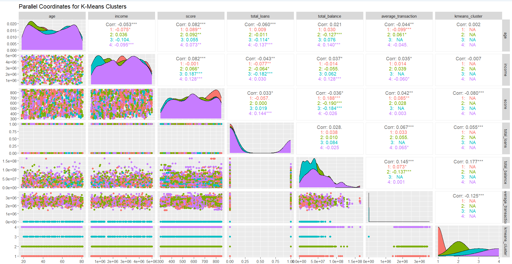
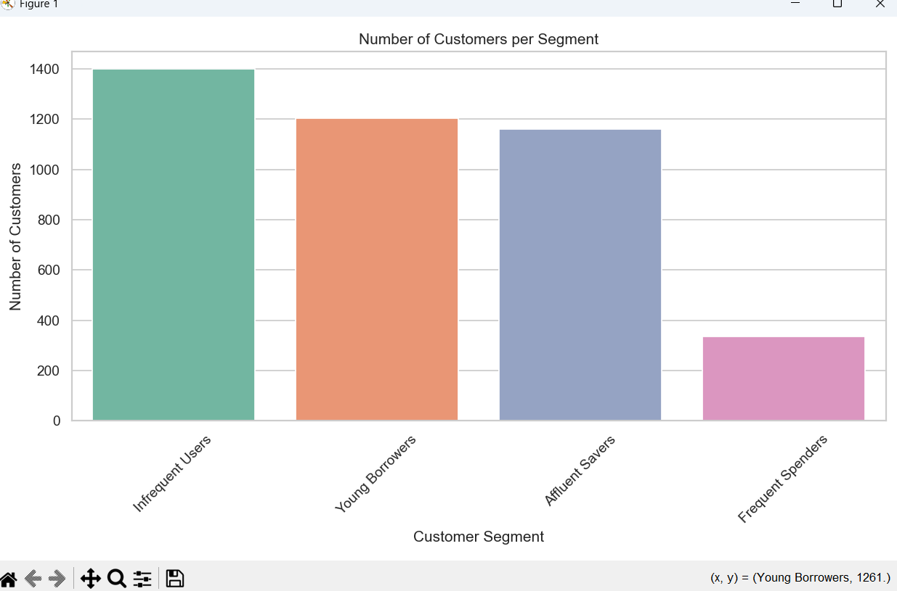
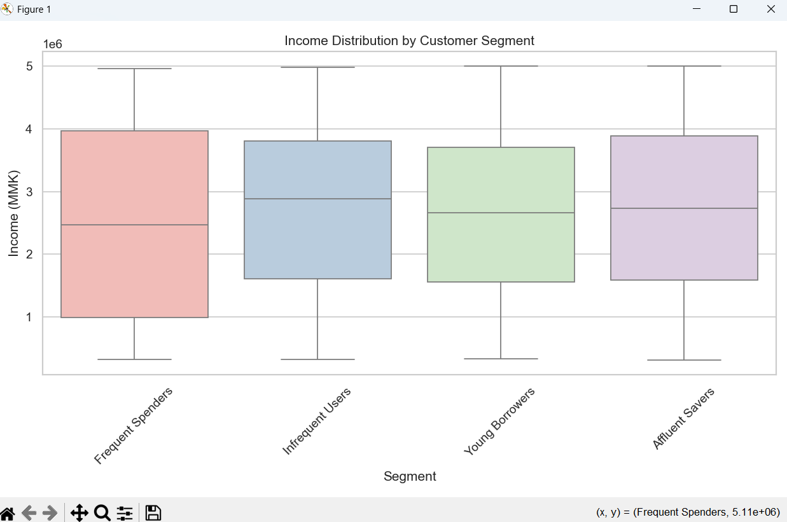
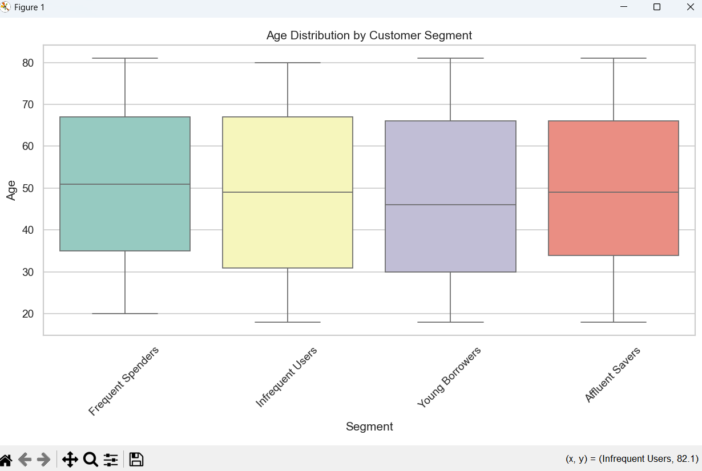
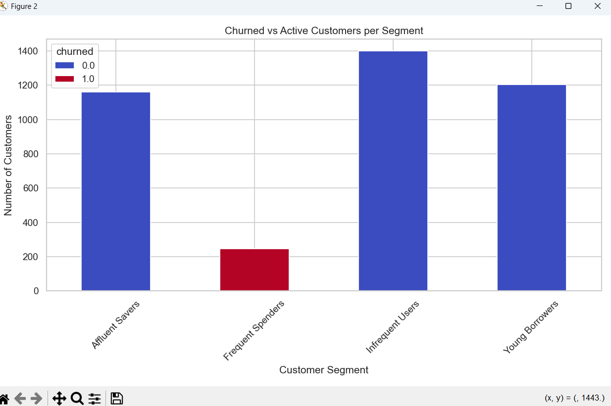
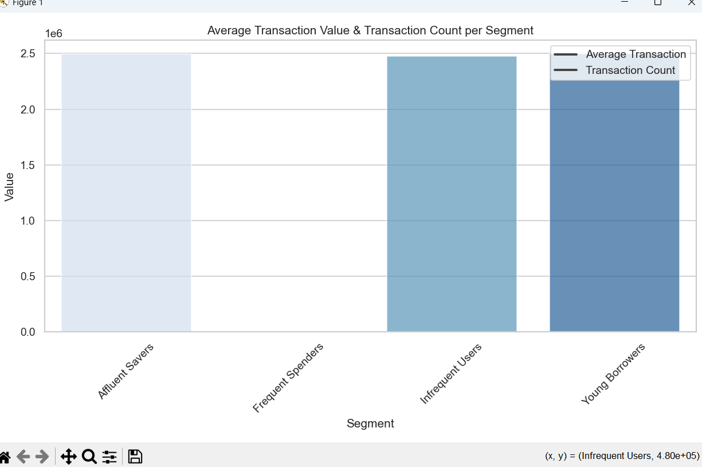
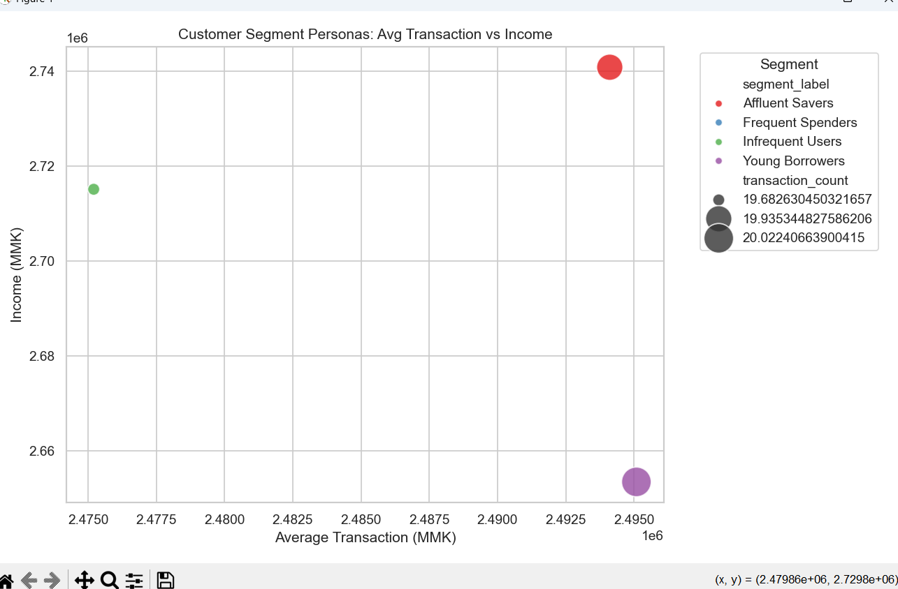

Using clustering, PCA, and behavioral analytics to group customers into meaningful segments for targeted marketing and personalized services.
This project focuses on grouping customers into distinct behavioral segments using advanced machine learning techniques. By applying PCA for dimensionality reduction and multiple clustering approaches including K-Means and Hierarchical Clustering, we uncover natural customer groupings based on spending patterns, demographics, account activity, product usage, and engagement metrics. The segmentation enables personalized marketing, optimized resource allocation, and improved customer lifetime value.
The dendrogram visualizes how customers merge into clusters step-by-step using hierarchical clustering. At a sample of 500 customers (after PCA), the tree structure reveals natural separations in customer behavior. Large vertical distances between merges indicate stronger boundaries between groups, suggesting the presence of 3–4 major clusters. This bottom-up approach provides insights into the natural hierarchy of customer relationships and helps validate the optimal number of clusters before applying K-Means.
Insight: Ideal for understanding natural customer hierarchy and validating the number of clusters before K-Means.
The 2D K-Means plot shows how customers separate into clear cluster groups based on their transactional and behavioral patterns. Each color represents a distinct cluster where customers share similar spending amounts, usage frequency, or financial activity levels. The clear separation between clusters confirms that customers can be effectively grouped for targeted marketing strategies. The centroid positions indicate the average characteristics of each segment, enabling precise targeting and resource allocation.
Insight: Useful for quickly identifying high-value, medium-value, low-value, and inactive customer groups.
PCA reduces the high-dimensional customer dataset into three principal components that capture most of the variance while simplifying the cluster structure. Visualizing K-Means in 3D reveals strong cluster compactness and clear distance between groups, indicating that customer behavior patterns are well-structured and consistent. This 3D representation provides enhanced interpretability of the segmentation results and confirms the quality of the clustering approach for downstream predictive modeling applications.
Insight: Clear 3D separation indicates high-quality clusters, ideal for downstream predictive modeling.
The parallel coordinates plot enables comprehensive comparison of customer clusters across multiple behavioral features simultaneously, including spending score, account balance, transaction frequency, credit activity, and product engagement. Each colored line represents an individual customer, grouped by cluster assignment. Distinct patterns emerge showing that some clusters exhibit consistently high spending and transaction frequency, while others demonstrate low values across most variables. These clear behavioral differences provide actionable insights for developing targeted segmentation strategies and personalized customer experiences.
Insight: Perfect for identifying cluster characteristics and creating detailed segmentation personas.
This analysis develops detailed customer personas for each identified segment, combining behavioral patterns with demographic characteristics. Each segment receives a descriptive profile including average transaction values, product preferences, channel usage patterns, and engagement levels. The personas enable marketing teams to develop highly targeted campaigns, product teams to design segment-specific features, and customer service to provide personalized support experiences based on segment characteristics and needs.
     Insight: Detailed personas transform abstract clusters into actionable customer understanding for business teams.
The Customer Segmentation analysis reveals strong, meaningful grouping patterns among banking customers, enabling data-driven personalization and strategic resource allocation. Using advanced machine learning techniques including PCA and multiple clustering approaches, we successfully identified four distinct behavioral profiles with clear business implications:
Segment Analysis:
To fully leverage customer segmentation insights across the organization:
Marketing & Campaign Optimization: